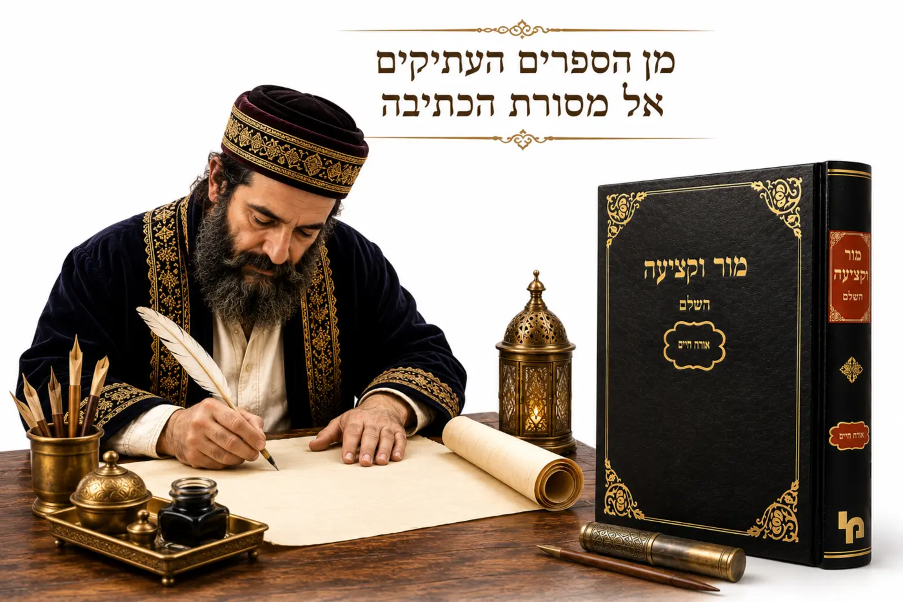

כתב מור וקציעה

שנים רבות שאני עוסק בכתיבת סת״ם. מדי פעם מגיעה לידי מזוזה נאה במיוחד, שחלק מאותיותיה ספרדיות, ושרוב הכתב שווה לכתב האשכנזי, וביניהן כמה מן הפרטים שהזכירו האר״י והיעב״ץ, והרבה שלא.
כאשר אני שואל מהו מקורו של הכתב, התשובה החוזרת היא: „זהו כתב מור וקציעה”.
אלא שכאן מתעוררת שאלה פשוטה.
לפני כשבעים שנה בלבד התקבצו גלויות ישראל לארץ, וברשותנו אלפי ספרי תורה, תפילין, מזוזות ומגילות מכל תפוצות ישראל.
אנו מכירים היטב את הכתבים המרוקאי, העיראקי, התימני, האיטלקי, הטורקי והאשכנזי. לכל אחד מהם יש מסורת ברורה, כתבי יד ודוגמאות עתיקות.
אולם כתב מסודר בשם „מור וקציעה” אינו מוכר כאחת ממסורות הכתיבה העתיקות.
יש כתבים עתיקים שאפשר לומר שאולי יש קשר...
כיצד הכיר היעב״ץ את הכתב הספרדי?
רבי יעקב עמדין, המכונה היעב״ץ, חי לפני כ־320 שנה (תנ״ח–תקל״ו). בעל הספר מור וקציעה עבר בילדותו לאמסטרדם לאחר שאביו, בעל ה„חכם צבי”, התמנה לרב הקהילה האשכנזית בעיר.
באותם ימים הייתה אמסטרדם אחד המרכזים היהודיים החשובים בעולם.
לאחר גירוש ספרד ופורטוגל התיישבו בה רבים ממגורשי ספרד ומצאצאי האנוסים, שהקימו קהילה ספרדית מפוארת והביאו עמם כתבי יד, ספרי סופרים ואוצרות רוח מספרד. שם נחשף היעב״ץ למסורת הכתב הספרדי שעליה כתב בספרו.
היעב״ץ מסביר מה מטרתו
וכך הוא פותח את דבריו:
הנה נא נדבה רוחי אותי לדעת לרדוף ולחקור החלופים והשינויים שבין הכתיבה האשכנזית... ובין הספרדית... ואף על פי כן ארשום לי על פה על כל אות ואות... ואם יגזור ה׳ עלי... אחפש אחר הספרים המדברים בצורת האותיות האשוריות הספרדיות...
שוב נזדמנו לידי ספר מגן דוד לרדב״ז וספר מצת שמורים לרבי נתן שפירא, ושמתי מה שמצאתי בם בעניין צורת האותיות.
מתעד פרטים ולא את הפונט
שימו לב ללשונו של היעב״ץ. הוא אינו מציג שיטת כתיבה חדשה, אינו משרטט אלפבי״ת שלם ואינו יוצר פונט.
הוא פשוט מתעד הערות על פרטים שראה במסורת הכתב הספרדי.
ומהו אם כן „כתב מור וקציעה”?
נראה אפוא שבשלב מאוחר יותר עיצב סופר כלשהו שיטת כתיבה שלמה שבנויה רובה ככולה על הכתב האשכנזי, שילב בה חלק מהערות היעב״ץ, חלק מדברי האר״י ויסודות נוספים, ולימים נקשר הכתב לשם ספרו של היעב״ץ.
הלזה יקרא כתב מור וקציעה?
כאשר אדם נשאל איזה כתב זה, והוא משיב כתב מור וקציעה, הרי הוא מעביר טעות לדור הבא, כיוון שכל אדם המקיים את דברי היעב״ץ בפרטים שכתב מזיכרונו יכול לקרוא לכתב שלו מור וקציעה. אולם מחוסר הבנה פשוטה הולכת הטעות ומשתרשת.
בשבוע הבא אי״ה
בשבוע הבא נעבור יחד על דברי היעב״ץ, אות אחר אות, ונבחן האם הכתבים המכונים כיום „מור וקציעה” אכן תואמים את דברי היעב״ץ, וניווכח שלא באופן מוחלט.
בברכה
יוחאי אוחיון – ראש מכון אמנות הסת״ם
מומחה בהוראת הכתב הספרדי